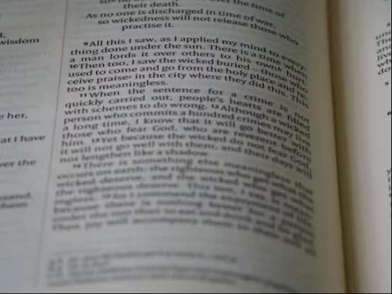

Success in the CET exam requires more than just hard work - it demands smart work. This comprehensive guide will help you develop effective study techniques that maximize your learning potential and help you achieve your goals.
1. Active Learning Techniques

Active learning involves engaging with the material rather than passively reading. Here are some effective techniques:
- Create mind maps for complex topics
- Teach concepts to others or explain them aloud
- Practice with previous year questions
- Use flashcards for quick revision
2. Effective Time Management

Proper time management is crucial for CET preparation. Here's how to make the most of your study time:
- Use the Pomodoro Technique (25-minute focused study sessions)
- Create a realistic study schedule
- Prioritize topics based on weightage
- Take regular breaks to maintain focus
3. Regular Mock Test Practice
Mock tests are essential for CET preparation. They help you:
- Understand the exam pattern
- Improve time management
- Identify weak areas
- Build exam confidence
4. Effective Note-Taking Strategies

Good notes are the foundation of effective revision. Here's how to take better notes:
- Use the Cornell Note-Taking System
- Create visual aids and diagrams
- Use color coding for different topics
- Review and revise notes regularly
5. Memory Enhancement Techniques

Improve your memory retention with these techniques:
- Use mnemonic devices
- Practice spaced repetition
- Create associations and connections
- Get adequate sleep for memory consolidation
Conclusion
Success in CET requires a combination of smart study techniques, consistent practice, and proper time management. Implement these strategies in your preparation, and you'll be well on your way to achieving your goals.